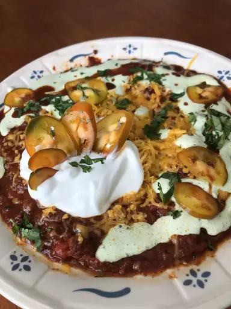

Best Damn Chili
This is my best Chili recipe. After years of adjusting recipes that were either too spicy or too mild,
everyone loves this. Even my fiance who hates Chili.

Summary
- Prep time: 30 mins
- Cook time: 2 hrs 15 mins
- Total time: 2 hrs 45 mins
- Servings: 12
- Yield: 12 servings
Ingredients
- 4 tablespoons olive oil
- 1 yellow onion, chopped
- 1 red bell pepper, chopped
- 1 Anaheim chile pepper, choppped
- 2 red jalapeno pepper, chopped
- 4 garlic cloves, minced
- 2.5 pouunds lean ground beef
- 0.25 cup Worcestershire sauce
- 1 pinch garlic powder, or to taste
- 2 beef bouillon cubes
- 1 (12 fluid ounce) can or bottle light beer (such as Coors)
- 1 (28 ounce) can crushed San Marzano tomatoes
- 0.5 cup white wine
- 2 tablespoons chili powder
- 2 tablespoons ground cumin
- 1 tablespoon brown sugar
- 1 tablespoon chipotle pepper sauce
- 2.5 teaspoons dried basil
- 1.5 teaspoons smoked paprika
- 1 teaspoon salt
- 0.5 teaspoon dried oregano
- 0.5 teaspoon ground black pepper
- 2 (16 ounce) cans dark red kidney beans
- 1 cup sour cream
- 3 tablespoons chopped fresh cilantro
- 0.5 teaspoon ground cumin
Steps
- Gather all ingredients
- Heat oil in a large pot over medium heat; cook and stir onion, bell pepper, Anaheim pepper, jalapeno peppers, and garlic in the hot oil until softened
- Meanwhile, heat a large skillet over medium-high heat. Cook and stir beef in the hot skillet until browned and crumbly, 5 to 7 minutes.
- Add Worcestershire sauce and garlic powder. Crumble bouillon cubes over beef and add beer. Continue to cook, scrapping any browned bits from the bootom of the skillet, until liquid is hot, about 3 minutes.
- Stir beeg mixture into pepper mixture.
- Stir crushed tomatoes, diced tomatoes, tomato paste, and wine to the beef mixture. Season with chili powder, 2 tablespoons cumin, brown sugar, pepper sauce, basil, paprika, salt oregano, and black pepper.
- Bring to a boil and reduce heat to medium-low. Cover and simmer until meat and vegetables are very tender and flavours have developed in the chili, about 90 minutes, stirring occasionally.
- Mix kidney beans into beef and vegetables. Continue tosimmer until beans are hot, about 30 minutes more.
- Blend sour cream, cilantro, and remaining 0.5 teaspoon cumin in a food processor until smooth. Serve sour cream mixture with chili.
- Serve hot and enjoy!